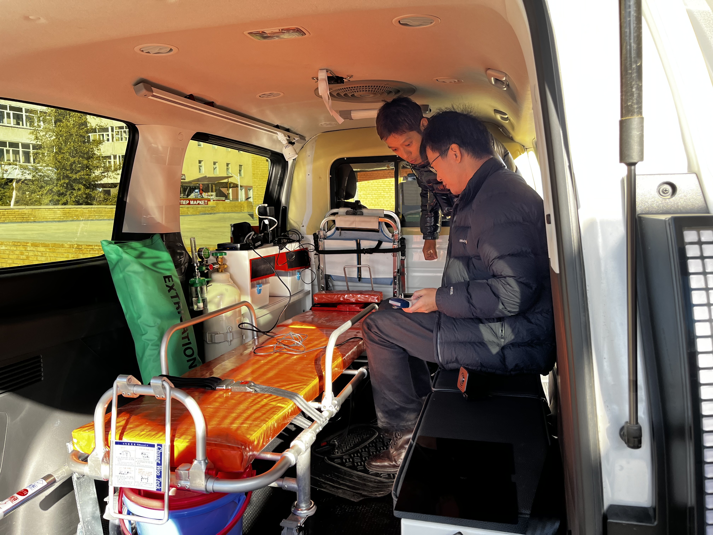
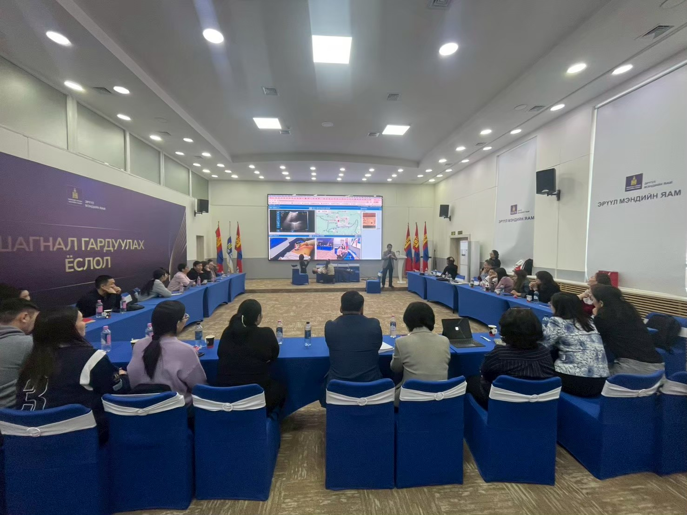
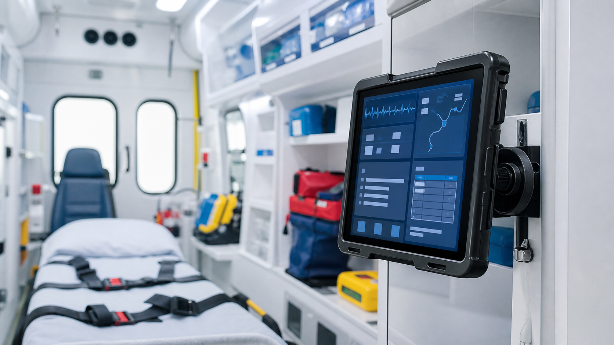
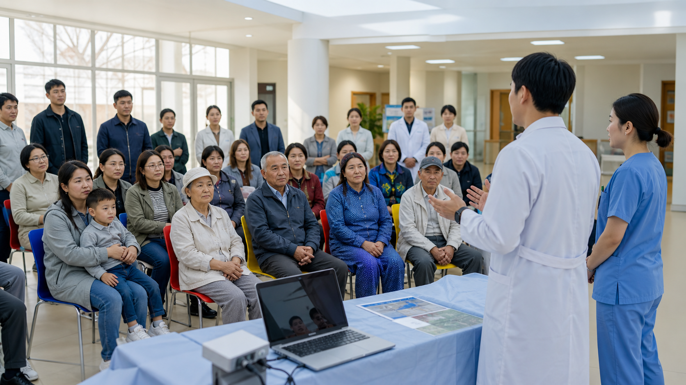

救急搬送の現場体験
日本とモンゴルの双方で救急車同乗や現場観察を行い、搬送の障壁や支援者になり得る人々を具体的に把握します。
トヨタ財団 2025年度国際助成プログラム 採択事業
資源動員論に基づくシステム変革の実現へ。POCUSとICTを活用し、救急車内と救急室をつなぐ新しい救急搬送システムの実装を目指す事業です。




日本では人口減少と医療機関の集約化により、地方の重症患者が救命救急センターへ搬送されるまでに長い時間を要する地域があります。モンゴルでは首都ウランバートルへの人口集中と交通渋滞、救急搬送体制の整備不足が重なり、医療施設への円滑な搬送が課題になっています。
本事業は、こうした異なる背景を持つ共通課題に対し、救急車内でのPOCUSとICTを活用した情報共有を軸に、地域住民の救急医療へのアクセス改善を目指します。
日本とモンゴルの双方で救急車同乗や現場観察を行い、搬送の障壁や支援者になり得る人々を具体的に把握します。
携帯型超音波を用いて、限られた時間内に重症度判断へ必要な情報を得るための教育と実証を進めます。
救急車内の情報を医療機関と共有し、搬送前から受け入れ準備や判断につなげる仕組みを検討します。
医療者、行政、IT技術者、地域住民との対話を通じて、実装に必要な理解と協力を広げていきます。
2019年から続く交流を土台に、双方の強みを活かして救急医療アクセスの課題に向き合います。技術を導入するだけでなく、地域住民、救急搬送に関わる医療者、行政が変革の支援者となるプロセスそのものを重視します。
井上信明氏がJICA事業を通じ、モンゴルの卒後臨床研修システム整備やモデル研修の実装に関わりました。
日本側メンバーがモンゴルの救急医と協働し、研修体制、診療ガイドライン、保険収載につながる取り組みを進めました。
デジタル田園健康特区で、POCUSとICTを活用した救急医療課題の解決に向けた実装が進められています。
オンラインでのキックオフ後、ウランバートルと吉備中央町で救急同乗実習、ワークショップ、情報発信を行います。
POCUSとICTを活用した情報共有の実証、救命士向け研修、行政職を含むフォーラムを通じて、持続可能な実装へ近づけます。